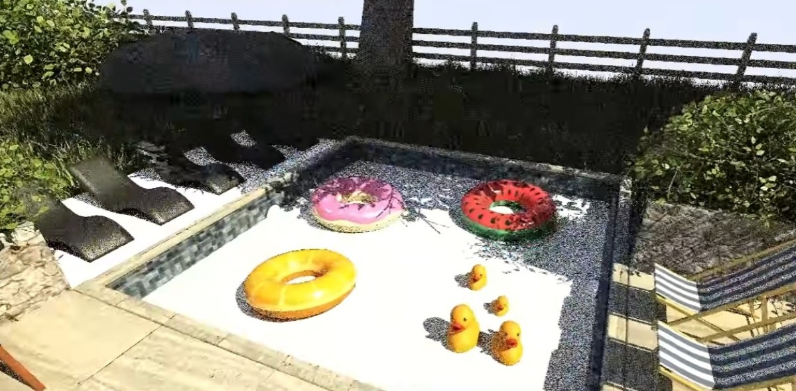

HiPR：依場景變動與光傳輸影響排序 Path Tracing 更新，先把有感像素算完
University of Utah 的 Hierarchical Progressive Rendering 追蹤編輯對直接可見區、反射、陰影與間接光的影響，優先更新重要區域，最後仍收斂到相同 unbiased path-traced 結果。

研究 ★★★★☆
完整分析
渲染技術
HiPR 不是降低最終 path tracing 品質，而是改變更新順序：當物件、材質或燈光被編輯時，先找出直接可見的變動，再沿 reflection、shadow、indirect illumination 等 light-transport 路徑估算受影響區域，優先重算最重要的像素，其餘區域再逐步追上。
製作影響
若這類 scheduling 進入 DCC、lookdev 或 path-traced editor，最大的收益是互動感而不是最終 render time；藝術家能更快看到我剛改的東西造成的結果，對燈光、材質與 level design 的迭代節奏特別有意義，也可能影響即時 path tracing 的 budget 分配。
成熟度驗證
目前屬研究階段，應用前要測快速連續 edit、大片間接光、鏡面反射鏈與透明材質下的 outdated pixel 是否造成誤導。真正可用的判斷標準不是 demo 看起來快，而是相同 noise budget 下，藝術家能否更早得到足以做決策的畫面且最終仍無偏差收斂。